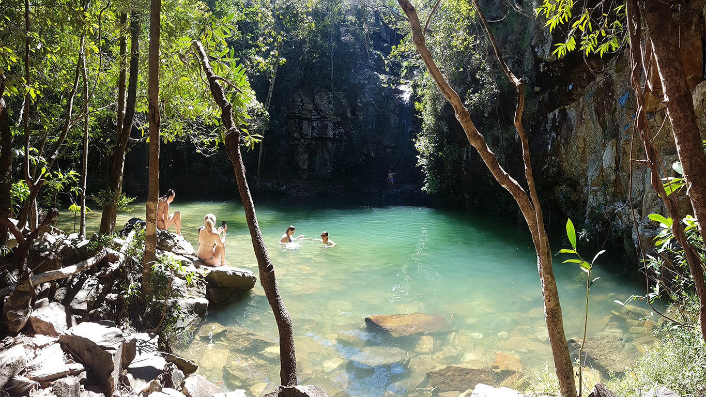
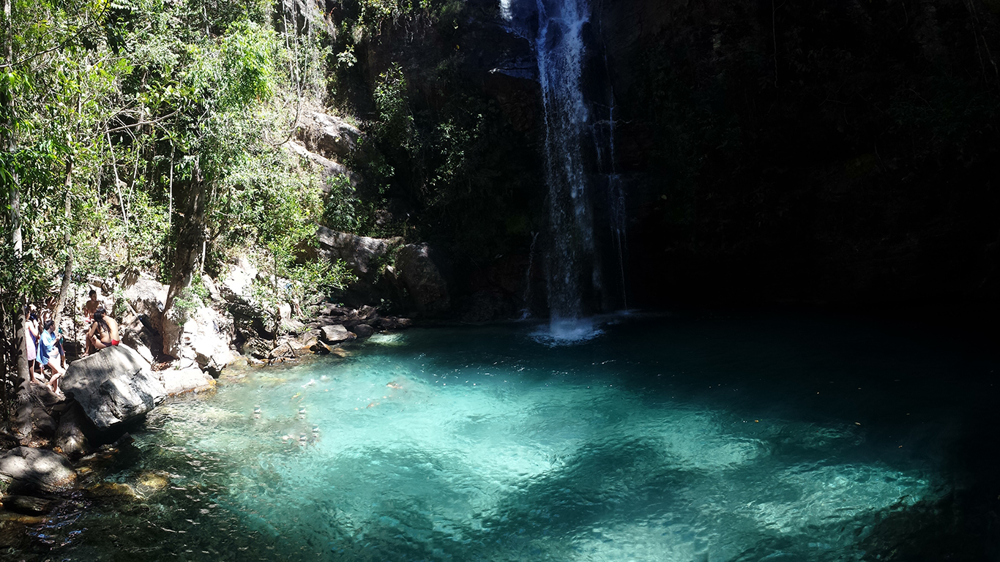
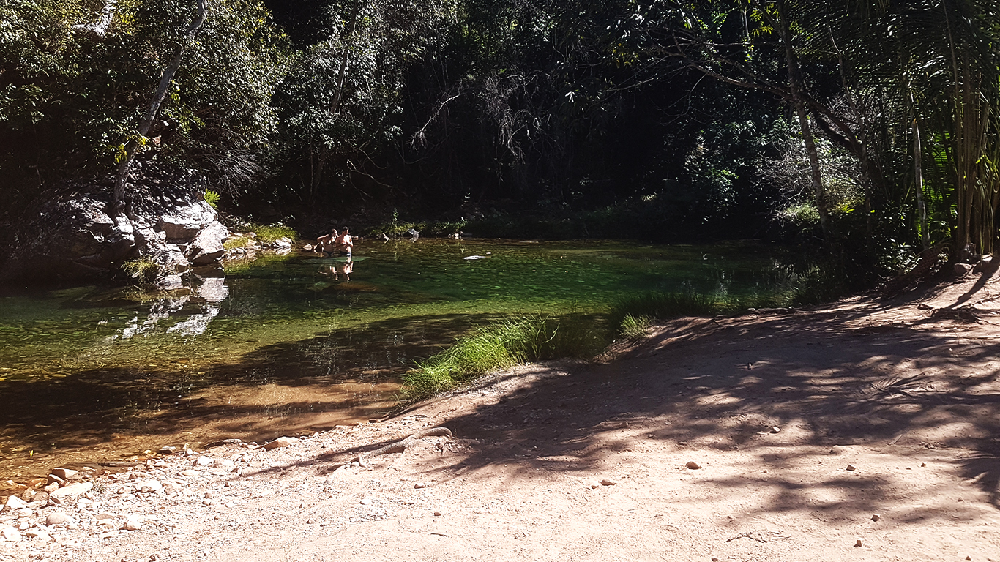

🌍 O cerrado tem duas estações: chuva e seca
Diferente de outros biomas, o cerrado da Chapada dos Veadeiros não segue as quatro estações do calendário convencional. Aqui o que define tudo são dois grandes períodos: o das chuvas e o da seca, com dois meses de transição em cada extremo que pertencem aos dois mundos ao mesmo tempo.
Vegetação exuberante, rios cheios, clima ameno, verde intenso. Cachoeiras no auge da sua força e beleza.
Clima árido, noites frias, dias quentes, piscinas cristalinas. Céu limpo e perfeito para observação de estrelas.
Abril e outubro são os meses de transição e são frequentemente os mais surpreendentes para os visitantes, pois reúnem características dos dois períodos simultaneamente.
🌧️ Período de chuvas: outubro a abril

O período de chuvas transforma a Chapada num paraíso de verde intenso. A vegetação do cerrado desperta com toda a força, os rios atingem sua capacidade máxima de vazão e as cachoeiras ganham volume impressionante. A temperatura da água fica mais agradável ao toque e o clima é ameno, com sol pela manhã, nuvens ao longo do dia e chuvas ocasionais à tarde.
Ao contrário do que muitos pensam, não chove o tempo inteiro. As precipitações costumam ser setorizadas; pode estar chovendo numa cachoeira enquanto outra, a poucos quilômetros, está com sol. Chuvas longas e contínuas são menos comuns, mas acontecem. Nos dias de invernada, o céu fica com neblina baixa e chuvisco fino, numa atmosfera mística e única que só a Chapada proporciona.

- Risco de cabeça d'água: enchentes repentinas nos rios após chuvas na cabeceira. Sempre com guia em atrativos aquáticos.
- Correntezas ocultas e armadilhas invisíveis: alguns dos pontos mais bonitos da Chapada escondem correntes subaquâneas traiçoeiras que não se percebem olhando para a superfície.
- Pedras molhadas e escorregadias: risco de queda é maior. Calçado com sola antiderrapante é essencial.
- Atolamento de veículos: estradas de terra ficam perigosas. Prefira veículos 4x4 ou contrate translado com guia.
- Trilhas com barro e lama: o guia conhece as condições do dia e adapta o roteiro.
☀️ Período de seca: abril a outubro


O período de seca traz um clima que lembra o de deserto: muito frio à noite e muito calor durante o dia. A amplitude térmica pode ser grande, com manhãs geladas abaixo de 10°C e tardes escaldantes acima de 35°C. Os ventos gelados das serras chegam com o inverno e a vegetação adquire tons dourados e terrosos característicos do cerrado seco.
Em compensação, as piscinas naturais ficam mais transparentes e cristalinas, com visibilidade total no fundo. As trilhas ficam mais firmes. O céu, sem nuvens, é perfeito para observação de estrelas. A poeira das estradas de terra é a principal desvantagem; prefira janelas fechadas nos translados.
A seca intensa pode fazer desaparecer completamente algumas cachoeiras sazonais, como a Cachoeira do Abismo. Além disso, o risco de queimadas é real nesse período. É fundamental consultar um guia local para saber quais atrativos estão acessíveis e seguros antes de sair.
🌸 A floração após a chuva: o espetáculo dos chuveirinhos

Uma das experiências mais únicas da Chapada acontece na transição entre a chuva e a seca: a floração dos chuveirinhos do cerrado. O Paepalanthus speciosus, popularmente chamado de chuveirinho ou palipalan, transforma os campos rupestres num tapete de flores brancas entre abril e julho, com pico em maio.
É nesse cenário que o fotógrafo Márcio Cabral foi premiado pela National Geographic Channel, registrando uma das suas fotos mais icônicas: chuveirinhos iluminados sob o arco da Via Láctea. Uma imagem que resume a magia da Chapada nesse período e que você pode viver também.
📅 Guia completo mês a mês
| Mês | Período | Nota | O que esperar |
|---|---|---|---|
| 🌧️ Janeiro | Chuva | ⭐⭐⭐⭐ | Calor intenso, chuvas diárias. Rios no volume máximo. Vegetação exuberante. |
| 🌧️ Fevereiro | Chuva | ⭐⭐⭐ | Chuvas torrentiais mais frequentes. Invernadas possíveis assim como veranicos. Clima imprevisível. |
| 🌦️ Março | Chuva | ⭐⭐⭐⭐ | Parecido com Fevereiro. Rios ainda cheios. Início do fim da estação úmida. Temperatura mais amena. |
| 🌤️ Abril | Transição | ⭐⭐⭐⭐⭐ | Rios cheios, chuveirinhos surgindo, pôr do sol com arco íris alaranjados. |
| ⭐ Maio | Melhor mês | ⭐⭐⭐⭐⭐ | Volume ideal, água não tão fria, chuveirinhos, céu estrelado, baixa temporada. |
| ☀️ Junho | Seca | ⭐⭐⭐⭐⭐ | Inverno seco, noites frias, sol constante, clima estável. |
| 🎉 Julho | Alta temp. | ⭐⭐⭐⭐ | Festas, eventos culturais, Encontro de Culturas. Mesmo clima de junho. |
| 🔥 Agosto | Seca intensa | ⭐⭐⭐⭐ | Piscinas cristalinas e temperatura da água amena. Calor extremo e poeira; atenção para queimadas e cachoeiras sazonais secas. |
| 🔥 Setembro | Seca intensa | ⭐⭐⭐⭐ | Similar a agosto: piscinas cristalinas e temperatura da água amena; algumas cachoeiras sazonais sem água. |
| 🌦️ Outubro | Transição | ⭐⭐⭐⭐ | Início das chuvas. Rios voltam a encher. Vegetação renascendo. |
| 🌧️ Novembro | Chuva | ⭐⭐⭐ | Chuvas torrencias setorizadas, vazão aumentando progressivamente. |
| 🌧️ Dezembro | Chuva | ⭐⭐⭐⭐ | Verão úmido. Fluxo turístico aumenta. Paisagem exuberante. |
⭐ Maio: o melhor mês para visitar a Chapada dos Veadeiros

Se você puder escolher apenas um mês, escolha maio. É quando tudo se alinha de forma perfeita:
Água na temperatura ideal
Rios com volume seguro e temperatura ainda não tão fria quanto no inverno pleno.
Chuveirinhos em plena floração
Os campos rupestres cobertos de Paepalanthus: espetáculo único no mundo.
Céu estrelado perfeito
Noites sem nuvens. A Via Láctea visível com clareza impressionante.
Pôr do sol com arco íris
Umidade residual cria arco íris dourados em toda região ao entardecer.
Baixa temporada
Sem multidões, sem filas, preços acessíveis. Mais atenção do guia ao seu grupo.
100% dos atrativos acessíveis
Volume ideal: atrativos de chuva E de seca funcionando simultaneamente.
🌤️ Abril e junho: os melhores vice campeões
Abril é o mês de transição da chuva para a seca. Os rios ainda estão com alto volume, a temperatura da água é agradável e os chuveirinhos começam a surgir. Os pôr do sol com arco íris alaranjados, violetas ou vermelhos são frequentes e deslumbrantes. Baixa temporada, tranquilidade.
Junho é o inverno seco em sua plenitude: frio intenso à noite, sol constante durante o dia, clima completamente estável. As águas das cachoeiras ficam mais geladas, mas absolutamente cristalinas. Ideal para quem prefere trilhas sem calor excessivo e céu sempre limpo.
🎉 Julho: alta temporada, festas e cultura
Julho tem o mesmo clima excepcional de junho, mas com um ingrediente extra: vida cultural intensa. O Encontro de Culturas de Alto Paraíso de Goiás acontece nesse período, reunindo artesãos, raizeiros, músicos e muita festa. A vila de São Jorge fervilha de energia. Se você quer sentir o pulso vivo da Chapada, julho é imperdível; só reserve tudo com bastante antecedência.


💚 A verdade que todo guia sabe
O melhor dia para conhecer a Chapada dos Veadeiros é aquele em que você pode vir. Cada mês tem suas cachoeiras, suas flores, suas cores e sua personalidade. Um guia experiente adapta o roteiro para entregar o melhor do período em que você está: seja na força bruta das chuvas ou na transparência cristalina da seca.
❓ Perguntas frequentes
Posso visitar a Chapada dos Veadeiros em qualquer época do ano?
Sim. O melhor dia para conhecer a Chapada é aquele em que você pode vir. Cada período tem suas belezas e particularidades. Um guia local experiente adapta o roteiro para aproveitar 100% da época em que você está visitando.
Posso visitar no verão (dezembro/janeiro)?
Sim! O verão úmido tem charme único: verde exuberante, cachoeiras poderosas e clima agradável. Redobre a atenção com chuvas e seja criterioso ao contratar um guia credenciado para atrativos com acesso a rios.
Qual a temperatura da água das cachoeiras na seca?
No período de seca, especialmente em junho e julho, a água pode estar bem fria, entre 16°C e 20°C em alguns pontos. Em agosto e setembro tende a esquentar um pouco com o calor intenso do dia.
Quais cachoeiras podem estar secas em agosto e setembro?
A Cachoeira Cordovil (Poço Esmeralda) é um exemplo que pode secar nesse período. Por isso é essencial consultar um guia local antes de montar o roteiro. Ele saberá o estado atual de cada atrativo.
Quando florescem os chuveirinhos do cerrado?
O Paepalanthus speciosus (chuveirinho) floresce entre abril e julho, com pico em maio. É uma das experiências mais únicas e fotogênicas da Chapada dos Veadeiros.
Preciso de carro 4x4 no período de chuvas?
Para alguns atrativos fora das estradas principais, sim. Uma alternativa é contratar o translado com o guia, que já inclui veículo adequado para as condições da estrada na época.
Pronto para planejar sua visita?
Conte com a Guia Chapada Veadeiros para montar o roteiro ideal para a época em que você vai, seja na chuva, na seca ou na transição. Cada visita é única e você vai aproveitar 100%.
💬 Planejar minha visita no WhatsApp
Brasileiro, pai, nascido no Rio de Janeiro, descendência italiana, analista de sistemas pela PUC-RIO, Diego Navi trocou o escritório pelo cerrado e fundou a Guia Chapada Veadeiros em 2017. Fluente em inglês e espanhol, conduziu centenas de grupos com segurança pela Chapada dos Veadeiros em todas as épocas do ano e conhece cada cachoeira, cada trilha e cada cantinho deste portal da Terra desde 2009.